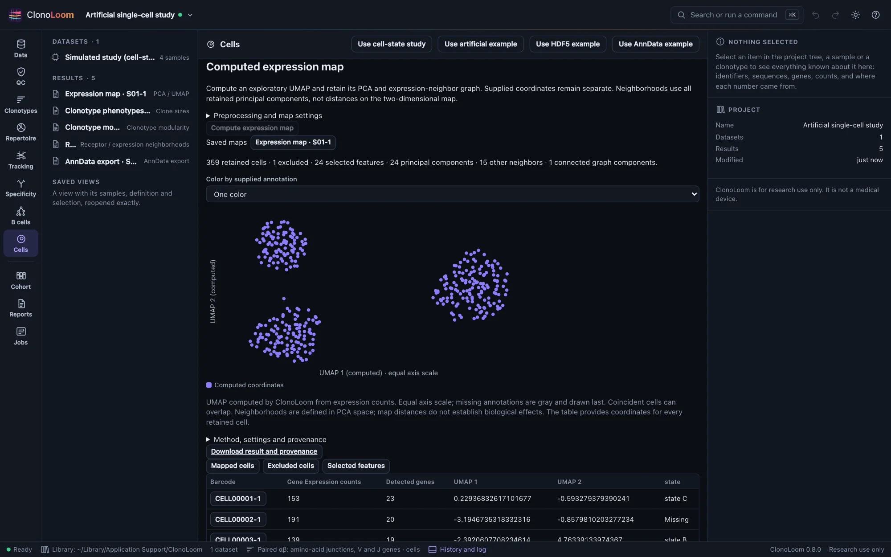
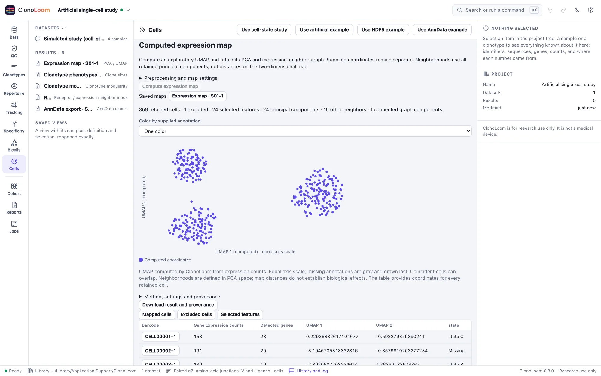

A complete single-cell study
Follow one sample through seven guided steps, checking populations and missing evidence at each step. The known truth tests the workflow; it does not establish biological discoveries.
Start with the artificial study
Open Examples → A paired cell-state study with supplied Gaussian clouds, generate it locally, and open its receptor data. Follow the seven guided steps. No reference download is required. The preset cell-states-clouds uses seed 20261028 and model clonoloom-artificial-cell-states-clouds-v1: two subjects, two samples each, 360 expression cells per sample, ten paired TRA/TRB clones per subject and 24 artificial genes. Gene calls are fictional SIM calls. Data and separate truth may be shared without restriction.
The first sample, S01-1, is used throughout. Repeated barcodes in other samples never join across sample boundaries. Counts follow a chosen negative-binomial state model; supplied Gaussian clouds illustrate the known states. Neither is fitted to biological data. See the complete generative rules.
Follow the seven steps
- Inspect supplied cell-state clouds. Check 360 expression cells, 359 raw receptor matches, one expression-only and one receptor-only barcode. There are 359 matching annotation rows, one annotation-only row and 358 supplied coordinate pairs. Missing labels are gray. These source coordinates are not UMAP; their axes are
map_xandmap_y. - Compute expression neighborhoods and UMAP. The all-zero cell is excluded, leaving 359 retained cells. Inspect selected genes, PCA and the graph in the saved result. Normalization uses all Gene Expression features; variable genes are ranked by sample variance, centered without scaling, then reduced by PCA. The exact PCA neighborhoods drive the graph and seeded UMAP. Source coordinates and labels do not enter the fit.
- Link clonotypes and supplied phenotypes. Keep the paired definition, sample and QC visible. Inspect 358 uniquely assigned retained cells in ten clones. Switch between clone size, size category, pairing and state; select a clone or brush cells to inspect its members. The phenotype population still includes all 360 expression cells, including the cell excluded from the map. Receptor-sample and mapped size populations have different denominators.
- Test clonotype connectivity. Inspect ten tested clones on the induced binary expression graph. Read observed internal edges, the analytic size-matched expectation, the discrete null-frequency plot and Benjamini–Yekutieli adjusted p-values. Small nulls are enumerated; larger ones use the recorded Monte Carlo seed and draw count. Isolates stay in the population. This is connectivity in the PCA-neighbor graph, not proximity on UMAP.
- Compare receptor and expression neighborhoods. Ten paired-clonotype mean-PC profiles produce 20 tests at requested neighborhood sizes 2 and 4. This fictional offline example explicitly uses CDR3-only TCRdist. Inspect shared-chain exclusions, inclusive cutoff ties, actual degrees, observed/expected overlap and Bonferroni adjustment across all testable clone–size pairs. An untestable comparison is missing, not zero overlap.
- Export linked cells as AnnData. Prepare and download the ZIP from Cells. It contains
cells.h5ad, the export record, manifest and NOTICE. The matrix retains all 360 cells, 24 features and 7514 stored sparse entries. There are 358 supplied and 359 computed coordinate pairs. The zero-count cell remains; its computed coordinates are NaN. The three embeddings keep supplied coordinates, all saved PCs and computed UMAP distinct. - Read the study methods and references. The paragraph identifies the artificial model and each saved analysis with its parameters and citations. Copy it with its references, then close the dialog. Save the project and reopen each kept result from Results to verify its identity.


Interpret the plots and tests
Both map axes have equal scale. Missing annotations remain neutral gray, and missing coordinates are not placed at zero. State labels in this benchmark are supplied truth-derived annotations; the application does not infer those labels. UMAP is an exploratory view: distances between islands, island sizes and their orientation are not effect sizes or evidence of antigen specificity.
Modularity tests a uniform size-matched grouping null. Receptor/expression comparison tests a conditional neighbor-overlap null. Cell state, receptor genes retained in expression PCs and other confounding can violate exchangeability or directly couple the two representations. Adjusted p-values address the stated test family; they do not remove those biases. Viewing fewer rows or selecting points does not redefine that family. Cells are observations, not independent subjects; subject-level comparisons and pseudobulk are deferred.
The expected counts above are regression checks for this preset and seed. Artificial clone–state associations validate bookkeeping and known calculations, not biological performance. The original integer-grid preset remains available as an overlap/missingness test.
Save, inspect and reuse
A project records source locations and saved results; it is not a self-contained archive of every source file. Keep the generated study directory and application library. Existing saved results reopen without rerunning their analyses; recomputing or preparing a new export requires the verified source inputs. Download complete JSON records as well as figures, retaining graph edges, memberships, null frequencies, parameters, hashes and citations.
Read exported AnnData using the documented ClonoLoom columns and provenance. The export is a receptor-link schema, not scirpy raw AIRR chains. Reimporting it as a new expression source does not recreate the original saved analyses. Raw counts require explicit downstream preprocessing.
Methods and independent checks
The workflow follows cited Scanpy preprocessing principles, PCA, UMAP, the documented scirpy connectivity score, and a declared CoNGA-style graph comparison. ClonoLoom-specific population, tie, expectation and correction choices are recorded rather than claimed to reproduce a complete external pipeline.
SciPy and independent tabulations check counts, PCA/neighbors, phenotype denominators and graph-test probabilities. AnnData and h5py independently read and rewrite the exported schema. The release fixture retains the four-sample study, separate truth and all five results. Current workers reproduce each document and the AnnData binary, preserving recorded provenance after checking relocated sources. See Science and the Cells reference guide.